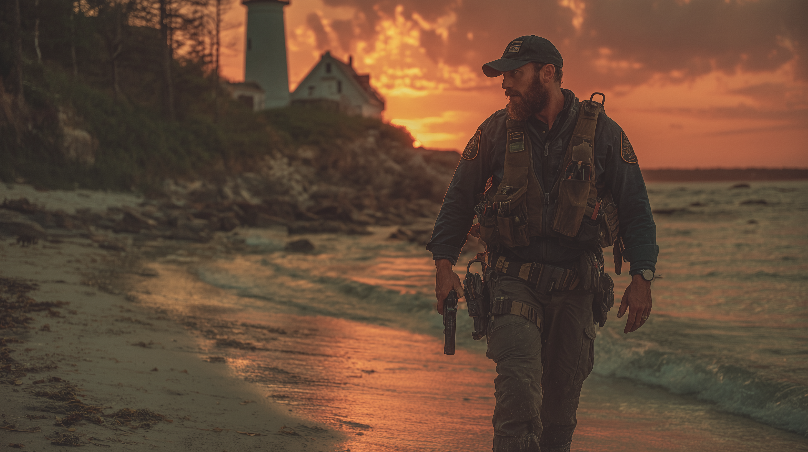

DELTA GREEN
Rekryterad 2022 efter Pittsburgh-incidenten. "Chesapeake" cell-operatör baserad i DC/MD/VA-regionen. USAR-expertis används för åtkomst till katastrofplatser och strukturella anomalier. Federala FEMA-legitimationer ger naturlig täckmantel. SAN 53/55, BP 44 - Adapted to Helplessness men nära Breaking Point.
"Jag har sett vad som finns i mörkret. Nu kan jag inte glömma det."

ÖVERSIKT
| Rekryterad: | Juni 2022 (3 månader efter Pittsburgh) |
| Cell: | "Chesapeake" (inofficiell beteckning) |
| Roll: | Tung-/sprängningsspecialist, strukturell expert, medicin-backup |
| Total operationer: | 6 (2 riktiga, 4 false flags) |
| SAN-förlust (total): | 20 poäng (10 återställt genom tid/terapi) |
| Aktuell SAN: | 53/55 (start 65/65) |
| Breaking Point: | 44 (marginal: 9 poäng) |
Operativt Värde
Trench bidrar med kritiska förmågor till Delta Green-operationer:
- Täckmantel & Åtkomst: USAR-legitimation ger legitim federal närvaro vid "katastrofplatser"
- Strukturell expertis: Kan identifiera anomala skademönster
- Sprängningar: Förstör bevis och anläggningar under täckmantel av "säkerhetsoperationer"
- Medicin: First Aid 80% - högst i Chesapeake Cell
- Tung utrustning: Åtkomst till grävutrustning, skärverktyg, transport
Filosofi & Motivering
"Vår värld är inte den enda, men alla vill oss illa. Det är upp till oss medvetna att skydda alla andra."
Sam gör Delta Green-arbete för samma anledning han gick in i brinnande byggnader som 18-åring: Folk behöver räddas. Att "systemet" – FEMA, DHS, lokala myndigheter – inte kan eller vill erkänna hotet spelar ingen roll. Små människor gör det smutsiga arbetet. Alltid har. Alltid kommer.
REKRYTERINGSINCIDENT
Tunnelkollaps under räddningsoperation i gammalt översvämningskontrollsystem. Sam och Robert Chen blev instängda när strukturen kollapsade bakom dem. Vattnet stod till bröstet. De hade minimal utrustning.
12 dagar av trauma:
- Hjälplöshet: Fångad, kunde inte rädda Robert, maktlös
- Våld/Död: Såg Robert lida och dö i sina armar
- Onaturligt: "Något annat" i mörkret – ljud, former, närvaro
Dag 12: Räddningsteam hittade Sam medvetslös, svårt uttorkad, hypoterm. De hittade Robert död. Ingen kunde förklara hur Sam överlevde 12 dagar.
Psykologisk påverkan: Pittsburgh bröt något grundläggande i Sam. De 12 dagarna av hjälplöshet härjade honom mot isolation och maktlöshet – men till ett pris. Han förlorade 2 POW permanent när hans psyke blev avtrubbat.
3 månader senare: Delta Green kontaktade honom. "Du är inte galen. Det du såg var verkligt."
Sam sa ja.
Officiell Täckhistoria: PA-TF1 och FEMA enades om "16-timmars" rapporten. Linda Fermorinzo, Sams fd chef, sa: "Om vi säger 12 dagar kommer folk fråga frågor vi inte kan svara. För din skull, för Roberts minne – 16 timmar."
Sam håller sig till rapporten. Men han minns 12 dagar. Och han minns något annat i mörkret.
RIKTIGA OPERATIONER (2)
Avloppssystem under bostadsområde. Folk försvann när de gick ner för att inspektera. Konstiga ljud nattetid. Lokala myndigheter ville stänga av gator och kalla in EPA.
Sam gick ner i avloppssystemet vid 03:00 med full USAR-utrustning. Det luktade inte som avlopp – det luktade organiskt. Förruttnelse men inte mänskligt.
200 meter in hittade han dem: viskösa organiska massor som växte längs tunnelväggarna. Inte mögel. Inte någon svamp han kände till. De pulserade. Svagt, men definitivt. Och när han kom närmare började de röra sig.
Vidtagna åtgärder: Sam backade ut, ringde Delta Green. "Det är levande. Jag kan bränna det eller spränga tunneln." Instruktion: "Gör båda."
Han använde termit för att bränna organiska materialet, sedan kontrollerad sprängning för att kollapsa sektionen. Täckhistoria: metanläcka orsakade explosion. Sam räddade 3 arbetare nära platsen när han kollapsade tunneln. Lokala nyheter kallade honom hjälte.
Sam drömde om de pulserande massorna i veckor efteråt.
Övergiven gruvstation orsakade radiointerferens över 30-mil område. Federal Communications Commission ville inspektera. Delta Green ville dit först.
Sam deployerades med två andra agenter – en CDC-epidemiolog och en lingvist (vilket Sam tyckte var konstigt men han frågade inte). De gick ner i gruvan.
Djupt inne hittade de kristallformationer som växte ur gruvväggarna. De pulserade inte visuellt, men när Sam kom närmare började hans radio skriva – vitt brus, statisk, och under det något som lät som... röster. Inte engelska. Inte något mänskligt språk.
Linguisten började spela in. CDC-agenten började ta prover. Sam sa: "Vi borde lämna. Nu." — "Vi behöver data," sa linguisten.
Tio minuter senare började linguisten blöda från näsan och CDC-agenten rapporterade hörselhallucinationer. Sam sa "fuck this," började rigga sprängämnen runt kristallerna.
Vidtagna åtgärder: Sam detonerade laddningarna efter evakuering. Kristallerna sprängdes i fragment. Radiointerferensen slutade omedelbart. Linguisten fick permanent tinnitus. CDC-agenten hörde röster i tre veckor.
Sam drömde om rösterna. De sa saker han inte förstod men ändå kände.
FALSE FLAG OPERATIONER (4)
Inte varje Delta Green-samtal är verkligt. Sam har deployerats till fyra "möjliga anomalier" som visade sig vara helt naturliga. Dessa operationer gjorde honom mer bitter än de riktiga – bevis att Delta Green inte alltid vet, och att byråkratin skickar honom på vettlösa uppdrag.
Resultat: Vanlig kemisk brand. Sam räddade 3 arbetare från instängd sektion. Ingen DG-koppling. Standard industriolycka.
Resultat: Gasläck från gamla rör orsakade hallucinationer. Sam installerade nya ventilationssystem. Inga monster. Inga anomalier.
Resultat: Geologisk instabilitet. Sam säkrade området med stödjning och strukturell förstärkning. Inga Deep Ones. Bara dålig strukturell konstruktion.
Resultat: Elektriskt fel orsakade brand. Sam undersökte brandorsaken. Normal brand. Ingen DG-koppling. Solo-operation, 6 timmar, ingenting att hitta.
Psykologisk Påverkan av False Flags
Fyra operationer där Sam riskerade tid, täckmantel, och möjligen liv för ingenting. Delta Greens byråkrati skickar honom på villovägar lika ofta som riktiga hot. Det förstärker hans misstro mot "systemet."
"Är det så här 'skyddar' myndigheterna folk? Skicka mig över landet för gasläckor och elektriska fel?"
PSYKOLOGISK STATUS (2025)
| Mått | Värde | Anteckningar |
|---|---|---|
| Start POW | 13 | -2 från anpassning → 11 |
| Start SAN | 65 | POW 13 × 5, BP 52 |
| Pittsburgh (2022) | -10 SAN | Adapted to Helplessness: POW 13→11, max SAN 65→55, BP 52→44 |
| Dry Run (2023) | -4 SAN | Organiska massor i tunnel |
| Signal Lost (2024) | -6 SAN | Kristallformationer med röster |
| Total förlust | 20 poäng | 65 → 45 utan återhämtning |
| Återställt | 8 poäng | Genom tid, terapi, ledighet |
| Aktuell SAN | 53/55 | Fortfarande funktionell |
| Breaking Point | 44 | 9 poäng från BP-utlösning ⚠️ |
Anpassningar
- ✅ Adapted to Helplessness: Klarar automatiskt hjälplöshetens SAN-tester. Kan hantera isolation, fångenskap, maktlöshet utan mental skada. Kostnad: -2 POW permanent.
- Våld: 1/3 framsteg: En markering från Roberts död. Behöver 2 till för fullständig anpassning. Framtida kostnad: -1D6 CHA + samma från Bonds.
Psykologiska Effekter
- "Pratar" med Robert Chen: Internaliserad röst av död partner, används som hanteringsmekanism
- Misstror "officiella förklaringar": 4 false flags förstärkte redan existerande misstro mot byråkrater
- Skeptisk mot myndigheter: Upplever att "små människor skyddar massan," inte staten
- Fortfarande funktionell: Gör jobbet, upprätthåller täckmantel, håller Bonds intakta
- Drömmer om incidenterna: Pulsande massor, kristall-röster, Pittsburgh-mörkret
Hanteringsmekanismer
- Fokuserar på praktiska uppgifter – fixa saker, träna, arbeta med händerna
- "Samtalar" med Robert för att bearbeta svåra beslut
- Behåller yrkesmässigt fokus på räddning – "det är vad jag gör"
- Accepterar filosofin "vi dör alla ensamma" som existentiell sanning
- Dricker mer än han borde (funktionell alkoholism börjar)
Riskbedömning
Status: Funktionell men försämras
Risker:
- Endast 9 SAN-poäng från Breaking Point – en större incident kan utlösa permanenta störningar och andra genombrott
- Hörselhallucinationer (Roberts röst) kan bli värre
- Alkoholberoende börjar utvecklas
- Bonds försvagas sakta (Rhea avlägsen, Sandra förvirrad, Randolf orolig)
- Anpassningskostnad: Har redan förlorat 2 POW permanent. Nästa anpassning (våld) kostar CHA + Bonds.
Styrkor:
- Stark känsla av syfte ("rädda folk")
- Praktisk hantering genom arbete
- Bonds fortfarande intakta (8/8/8)
- Cellens stödsystem (Mac, Sullivan, Sparky, Scalpel)
Filosofi & Fortsatt Motivering
"Vår värld är inte den enda, men alla vill oss illa. Det är upp till oss medvetna att skydda alla andra."
Trots SAN-förlust, false flags, och psykologisk deterioration fortsätter Sam göra jobbet. När larmet ljuder – USAR eller Delta Green – går han in. För det är vad han är till för. Han räddar folk från mörkret.
Även om mörkret aldrig helt lämnar honom.